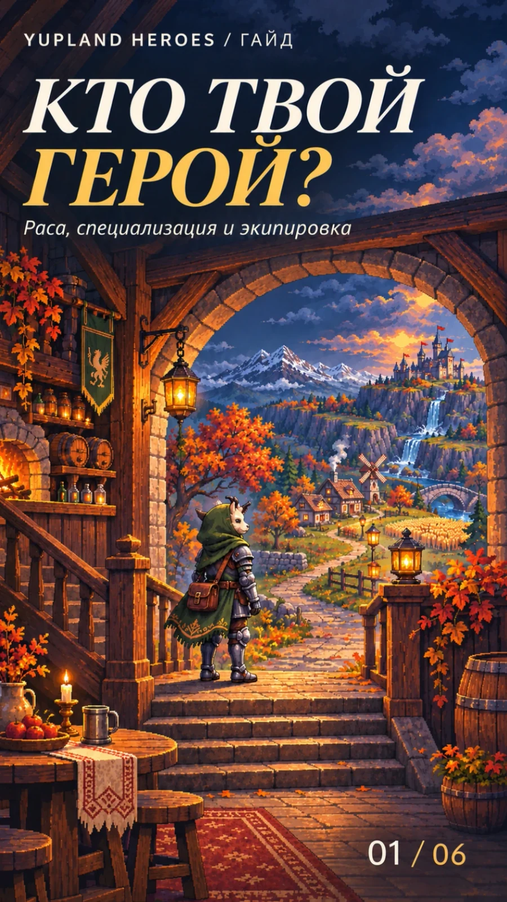
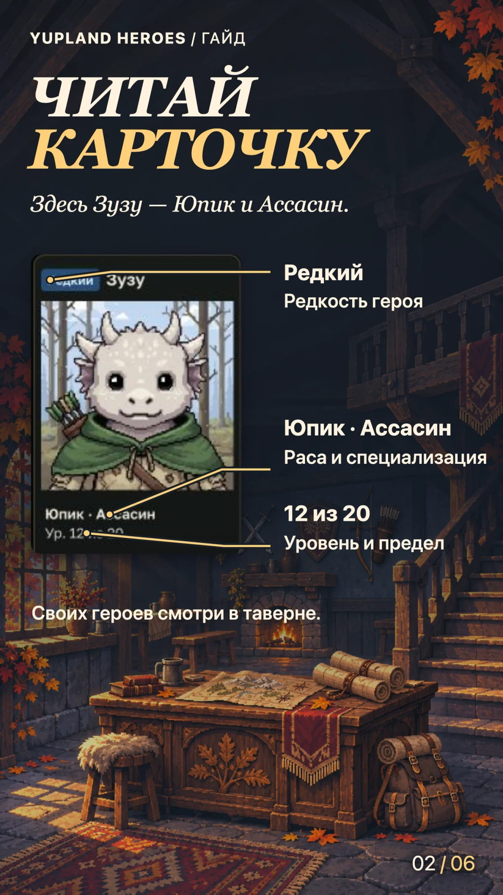
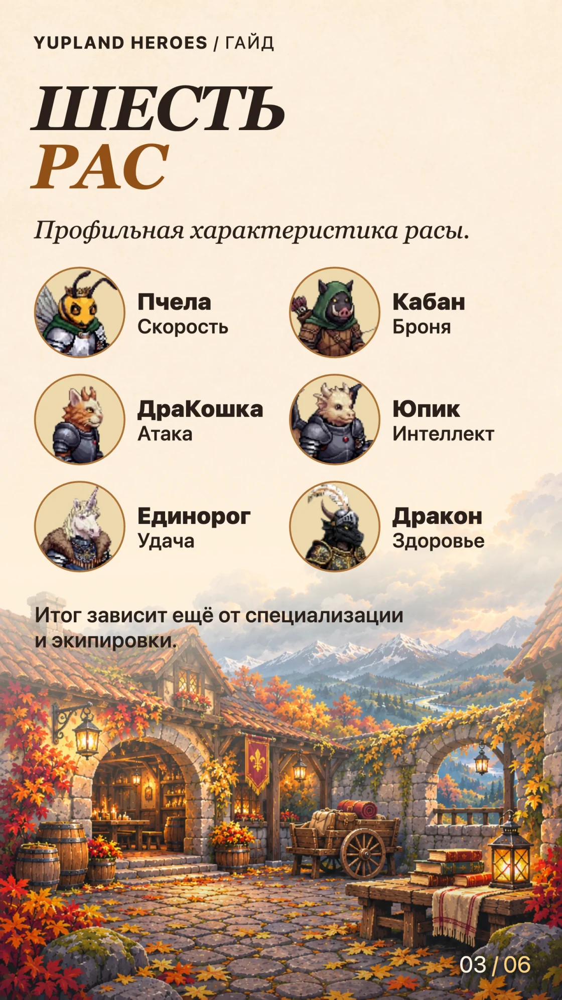
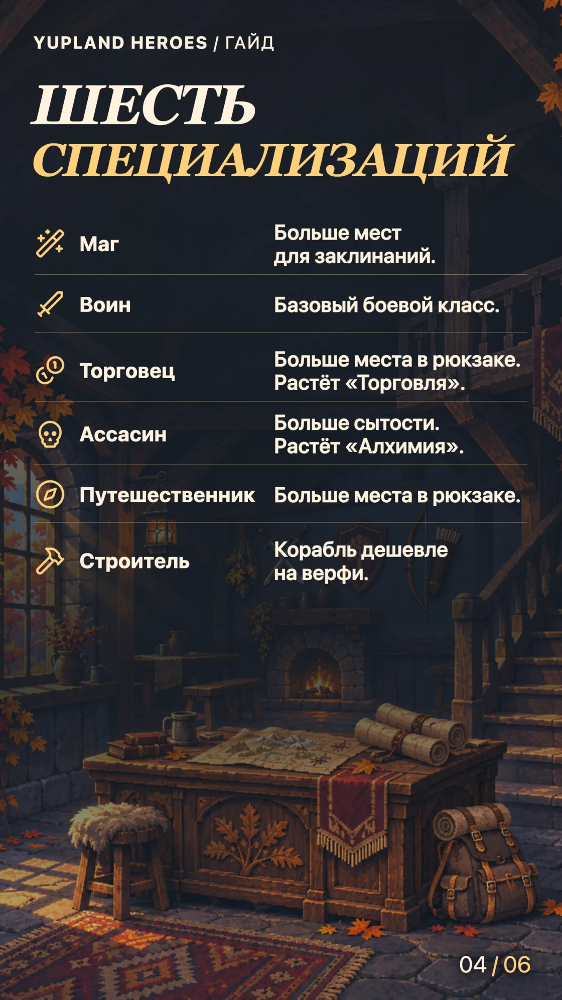
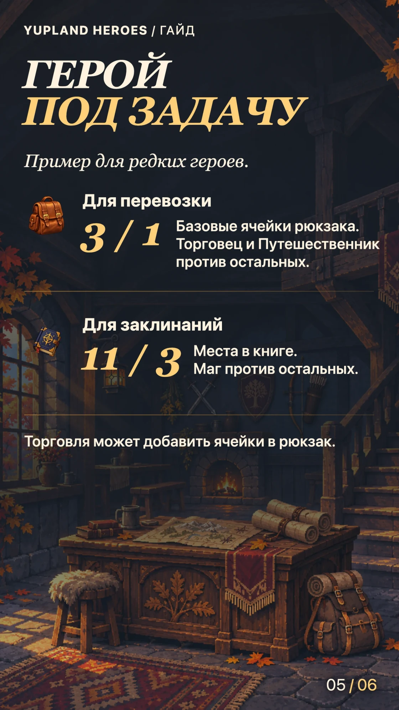
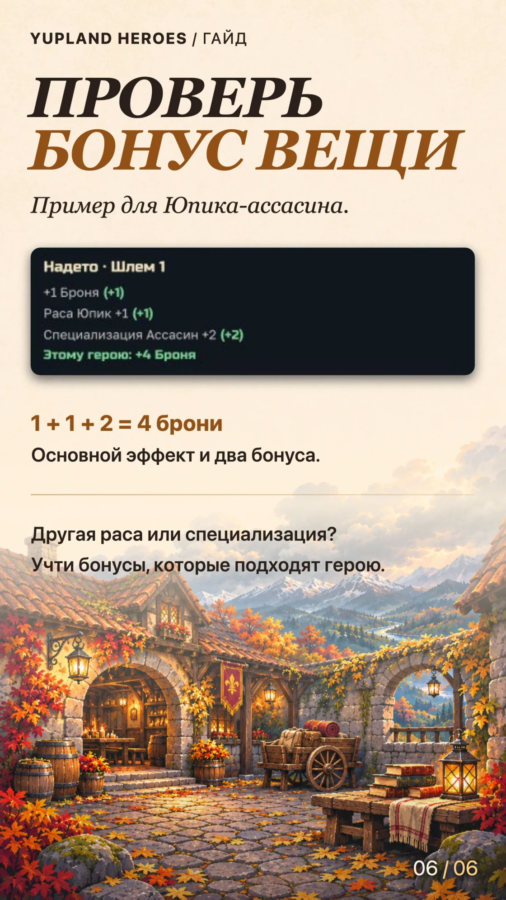

Кто твой герой? Раса, специализация и экипировка
-
Обложка 
-
Шаг 01 
-
Шаг 02 
-
Шаг 03 
-
Шаг 03 
-
Шаг 04 
Если выбираешь между двумя героями, начни с задачи. Для перевозки важно свободное место в рюкзаке, для магии — места в книге, для экипировки — прибавка именно этому герою.
Прочитай карточку
Своих героев можно посмотреть в таверне. В примере с рынка Зузу — Юпик по расе, Ассасин по специализации, редкий герой. Строка «Ур. 12 из 20» показывает текущий уровень и предел. У обычного стартового героя специализация может отсутствовать.
Сверь расу
Раса влияет на базовые характеристики. У Пчелы профильная характеристика — скорость, у Кабана — броня, у ДраКошки — атака, у Юпика — интеллект, у Единорога — удача, у Дракона — здоровье. При сравнении конкретных героев учитывай также специализацию, уровень и надетые вещи.
Выбери специализацию под задачу
- Маг держит в книге больше заклинаний.
- Воин — базовый боевой класс. Его характеристики определяют раса, уровень и экипировка.
- Торговец получает вместительный рюкзак и рост «Торговли» при развитии. Он может купить Магический сундук.
- Ассасин получает повышенный запас сытости начиная с редкого героя. С развитием растёт «Алхимия», которая увеличивает сумку для зелий.
- Путешественник получает больше базовых ячеек рюкзака, как Торговец.
- Строитель покупает корабль на верфи за 50 лайков. Обычная цена — 500.
- Для перевозки проверь Торговца или Путешественника. У редкого героя одной из этих специализаций 3 базовые ячейки рюкзака, у остальных — 1. «Торговля» может добавить места, поэтому перед вылазкой открой рюкзак конкретного героя.
- Для магии сравни книги заклинаний. У редкого Мага 11 мест, у редкого героя другой специализации — 3. У обычного стартового героя 1 место.
Посчитай прибавку от вещи
В примере шлем даёт +1 к броне, ещё +1 за расу Юпик и +2 за специализацию Ассасин. Юпик-ассасин получит +4 к броне. Юпик другой специализации получит +2, а Ассасин другой расы — +3. Сверь оба условия с карточкой героя перед экипировкой.